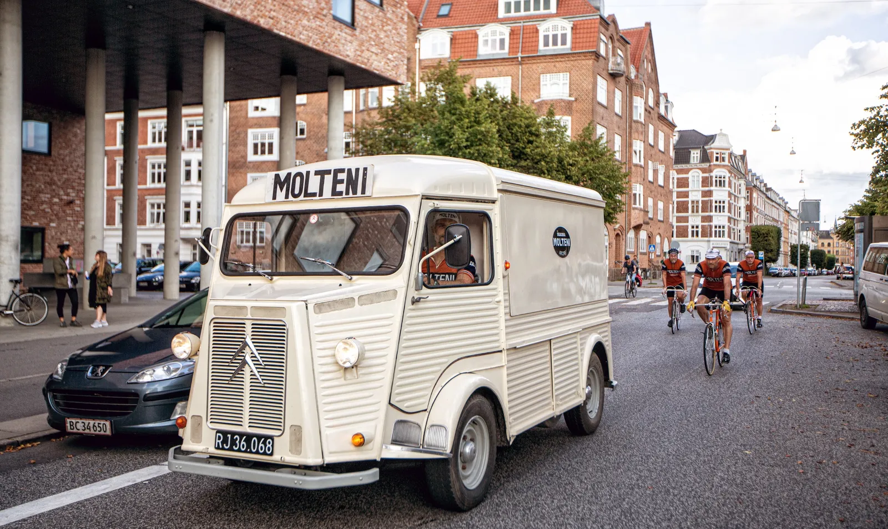
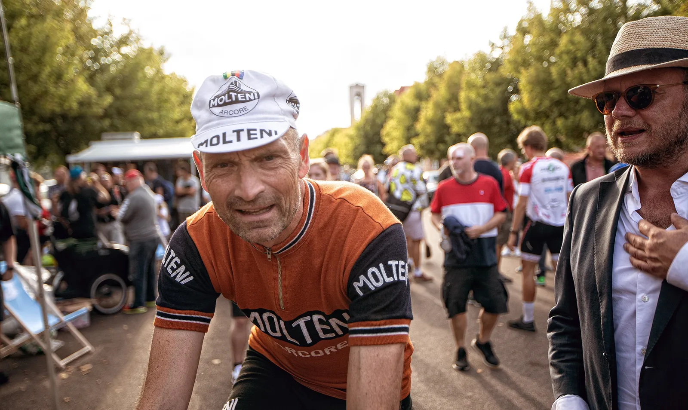
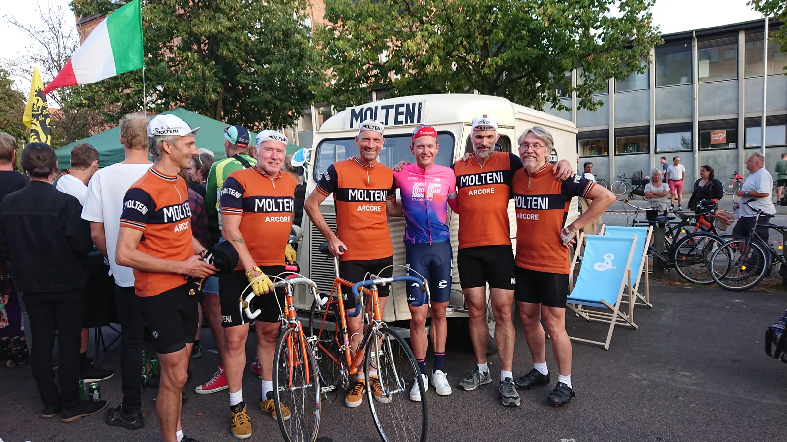

Matti slår Molteni i spurten

Matti Brechell, Danmarksmester Michael Mørkøv og en håndfuld continantal proffer i stramtsiddende badedragter – dét var en alvorlig mundfuld for Squadra Molteni ved Grand Prix Gruppo Sportivo Velopresse.
Som det eneste hold ankom Squadra Molteni til gadeløbet i formation og med holdbus, hvori der selvfølgelig lå både begliske øl og friske blodposer i køleskabet. Det tog noget tid at få holdbussen parkeret i målområdet, men det lykkedes at få den klemt ind lige ved siden af den interimistiske scene, hvor det verdenskendte og lokale band Power Solo havde stillet op.


Jamen vi nåede lige at parkere bussen – og så gik starten. Der var masterkørsel af nogle lokale hillbilly-motorcykel-rokkere, der vist havde misforstået, hvad en masteromgang var! For allerede på langsiden før mållangsiden, blev der gasset op. Jens, Lars, Svend og jeg sad faktisk lige og aftalte, at vi skulle køre Grane godt frem i feltet – og så var den forreste halvdel af feltet kørt. Rakmagak, lyder det fra Kaptajn Bjørnsteen
Det lykkedes dog Molteni-holdet at kæmpe sig godt frem i felterne. De ene hul blev lukket efter det andet – og flere venter endnu. Rakmagak. Og da klokken lyder for sidste omgang, blev de hårdtpumpede lukkede ringe presset til bristepunket i de sidste sving – men desværre måtte Molteni se sig slået i spurten af både Matti Brechell og Danmarksmester Michael Mørkøv.
Jeg lå ellers godt i de sidste sving, men da vi når ud af svingene og begynder på sidste langsiden, kan jeg høre en masse biiiisss, bissss, bissss, bissss lyde. Jeg tror selvfølgelig at mine lukkede ringe er punkterede. Så jeg bremser lidt og tjekker ringene. De var ikke punkterede. Og dér, midt i min nedbremsede acceleration, hvor jeg ser fronten glide væk – opdager jeg, at lydene er fra deres elektroniske batteridrevne gearskifte. Rakmagak, fortælle Grane Maaløe.
Efter løbet indgav Kaptajn Bjørnsteen selvfølgelig en officiel protest til Chefen for det hele Il Direttore Jakob Kristian Sørensen, der op det tidspunkt allerede var 2,5 Gin og Tonic foran tidsplanen. Protesten blev afvist – og i stedet blev Molteni inviteret til afterparty på Il Locale


Temperamentet og pulsen lagde sig efter en velfortjent øl i holdbussen. Og bedst som holdet står og er ved at evaluere aftenens løb, kommer Matti Brechell forbi til en sludder. Nærmest instinktivt forsøger Kaptajn Bjørnsteen at tilbyde Matti en Moltenikasket. Grane lokke endda med en rundvisning i holdbussen, men Matti modstår flirteriet.
Neeeej, jeg kører jo på Gios Torino, så vi kommer nok til at se til hinanden – men som konkurrenter, lød det fra Matti, der også kunne fortælle, at han er glad for at slippe for carbon og elektronisk grej fremover. Han elsker at rode med stålcykler og gammel mekanisk Campagnolo. Rakmagak.

